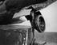
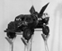

Acknowledgements
I would like to thank my parents, to whom I dedicate this project. Without their love and support my studies at home and abroad could not have been embarked upon.
I acknowledge the guidance of my supervisor at UCT, Associate Professor J.G.F. Younge, and thank him for his insight and dedication.
Special thanks is also due to Susan van der Schijff and Fanus and Christa Buys for their support throughout my studies in Cape Town. Thanks also goes to David Brown whose knowledge and approach to sculpture has and always will be an inspiration.
In addition, I would like to thank Martin Adams, Charley Van Rooyen, Justin Slack, Tiffany Turkington, Andrew Palmer, Ernest Moses, Godfrey Koff and Rose de Mink, all of whom contributed in various ways towards the completion of the body of practical work.
I acknowledge, with appreciation, financial contributions
from the following bursars while studying at UCT:
Human Sciences Research Council
Irma Stern
Jules Kramer Grant
University of Cape Town Research Council
I also acknowledge and thank SCAN - "Interdisciplinair Kenniscentrum voor Computergraphics/Animatie/Multimedia" for giving me the opportunity to put this project on the "World Wide Web" as part of my work done for the course "Voortgezette Opleiding Computergraphics" offered by SCAN in association with Academie Minerva - Hanzehogeschool, Hogeschool van Groningen, Groningen, The Netherlands.
I further acknowledge and thank Mr. Jules van de Vijver, the director of SCAN, for his inspiration in the field of new media and computers and for accepting me to stydy at SCAN.
I acknowledge, with appreciation, financial contributions
from the following bursars while studying in Europe:
Foundation for Research Development
Human Sciences Research Council
Stichting Nederlandia
Finally, to the rest of my friends and family, for all your love and support, thank you.
Groningen, The Netherlands, January 1996.
PART 1
Part 1
1. INTRODUCTION
There is the need to express what it is like to be a feeling, thinking, young person growing up on the southern tip of the African continent today, and this, from a generation who have had to cope with and survive the pressures of brain washing or intellectual laundering that an education in a State school in South Africa usually enforces. It is a generation trying to come to terms with information that has been filtered through the organs of the State radio and television systems, which routinely exclude news not deemed to be in the public interest, and substitutes an iconology dedicated to the values of sunny skies, beer and braaivleis.(Dubow 1986: 60)
As an artist living in South Africa, I am part of the generation that has had to cope with the 'intellectual laundering' Dubow speaks of. I have experienced the ways in which apartheid, as a cultural norm governing society, has been constructed. It is around these issues that the title,
An electronic laager: A sculptural interpretation of post-industrial society's cybernetic order
forms a concise description, and 'key' to an interpretation and understanding of the various issues which have amalgamated to inform my iconography, and the way in which these issues have been transformed into sculptural expression.
The National Party, which first and foremost catered to the needs of the Afrikaner, came into power in 1948 and gave the white minority in South Africa economic and military power over the black majority. They presented a racial policy based on separation between the races. From the moment of their election victory, the Nationalists set about turning their principles into reality. Their exercise in social engineering was called apartheid. [Figure 1]
The Broederbond, a secret organisation supporting the National Party, was the 'computer' that programmed the machinery of apartheid and guided the processes of social engineering. Founded by a small group in 1918, these men aimed to develop 'an organisation in which Afrikaners could find each other in the midst of great confusion and disunity and be able to work together for the survival of the Afrikaner people in South Africa and the promotion of its interests.' (Klopper in Harrison 1981: 87) [Figure 2] The Broederbond became a secret organisation in 1921 and gradually built up an extensive cell organisation, similar to that of the Communist Party's cell structure. By 1977 there were 810 cells with twelve thousand members. To become a member of the Broederbond during the reign of the National Party, a candidate had to measure up to a list of stringent standards: 'he [sic] had to strive for the internal existence of a separate Afrikaner nation with its own language and culture'; he had to give preference to 'Afrikaners and other well-disposed persons and firms in economic, public and professional life'; he had to uphold Afrikaans in his home, in his job and in the community at large; he had to be a Protestant; he had to be 'principled, faithful and cautious enough to meet the demands of the Bond'; he had to be financially sound; and he had to be 'able and willing to take part actively, regularly and faithfully in all the functions and activities of the Bond'. (Harrison 1981: 91)
Education was given the highest priority right from the beginning of the Broederbond, and it subsequently infiltrated every aspect of the education process. Its members included teachers, headmasters, school inspectors, lecturers, professors and rectors of universities and teacher-training colleges. These people influenced policy, the curriculum of state schools, examination and teacher training. By enforcing the segregation of people, Afrikaners put themself in power in 1948. This philosophy of difference kept them there for more than forty years. 'Christian National Education' became the 'antenna' by which the programmers broadcast their philosophy.
Hennie Serfontein, a journalist who wrote for the
Sunday Times newspaper and who published various articles concerning the Broederbond's influence on education, wrote: 'if you come from twelve years in school, where you have been under Broederbond control, then four years in a teacher training college, being indoctrinated with Broederbond thinking, with separation and the whole of that philosophy, by the time you are a teacher, it is not important whether you are a Broeder or not. The fact is, you will teach Broederbond philosophy because you do not know any other.' (Harrison 1981: 200) In this way the feedback loop was completed. A closed system, one which left no gaps for intervention by information that did not comply with that sanctioned by the National Party's 'programmers', was firmly, and seemingly irrevocably, put in place.
Inside the SABC nothing was transmitted before being thoroughly checked and censored to comply with Nationalist policy. A 'make believe' message was transmitted and the receptors of these messages reacted in a way similar to the party members in Orwell's
1984: [Figure 4]
In this study I analyse the relevance of cybernetics as a metaphor of control. I attempt to show that information structures underlie the contemporary paradigm of post-industrial society
2,
and that the concept of cybernetics can reflect on this development. A theoretical analysis of the electronic media and the way artists have respond to the new electronic era will be examined. The ways in which science fiction predictions have become the realities addressed by the genre of cyberpunk are explored. Finally, I show how the above issues combine in the body of sculptural work that forms the exhibition; 'An electronic
laager:
3,
A sculptural interpretation of post-industrial society's cybernetic order'.
Part 1
2. SCANNING FOR A NEW ERA
The symbiotic relationship between the military, science and industry, out of which this information age grew, is important because underlying it is a sense of power - of organised control and indoctrination. These underlying elements constitute the concept of cybernetics and, as such, they form an interesting metaphor for unpacking the ways in which power is dispersed in an information age.
Wiener used 'cybernetic' to describe the concept of machines that can handle information, make decisions, and control the operation of other machines. Because the concept of information plays such a central role, cybernetics is also known as 'information theory' or 'communication theory'. Information is quantified by cybernetics in a formula that is analogous to the formula given by Gibbs for thermodynamic
entropy 5.
The aim of cybernetic analysis is to define and isolate which particular piece of information passing between parts of a system motivates which action, or alters which states in the communicants. In its most basic form, the cybernetic system is made up of a receptor receiving information as input from the outside. This information is processed and sent to an effector or sender which then responds to the initial information with output. The output, however, alters the original conditions on the outside, thus leading to new information being sent in the form of input back into the system, establishing what is called a 'feedback loop'. [Figure 7]
The application of cybernetics to communication systems created by advanced technology forms the central theme of my practical body of work. It is a reflection on the era of networks, contact, feedback and generalised interface that functions in and alongside the universe of communication. Reflecting on the ways the National Party had used information for indoctrination purposes, I expanded the theme so as to question the freedom of individuals in the configuration of the mass media and state apparatuses that form the 'neocapitalist cybernetic order.'(Baudrillard 1983: 111) As data banks and information-processing systems in governmental agencies are able to process more information, so bureaucracies expand. As network television bring us more information about each other, privacy diminishes. As technological innovation progresses, so the artificial environment which governs our interaction with the world becomes more incomprehensible. As virtual reality becomes an ever-present part of our present, nature becomes more and more absent.
Part 1
3. ARTISTIC FEEDBACK
3.1. Electronic Media

In exploring post-industrial or cybernetic capitalism and information society, Jean Baudrillard develops a number of themes relating to those put forward by McLuhan. [Figure 9] Sharing McLuhan's fascination with technological change, Baudrillard's writing projects the reification of power and social control in the existing configuration of the media. McLuhan's proposition that it is the medium that carries the message has led Baudrillard to argue that attempts to democratise content and control the information process, are bound to have little effect, because they leave the form of the medium unchanged. These elements 'inexorably connect them with the system of power'. (Baudrillard 1981: 173)
A transition has occurred from a capitalist-productivist society to a 'neocapitalist cybernetic order'. (Baudrillard 1983: 111) Baudrillard takes McLuhan's dictum of an implosion of the message and its meaning in the medium a step further, arguing that there has been an implosion of the medium itself in the real world.
A bizarre example of hyper-reality was the coverage of the Gulf War by global television networks. [Figure 10] Television audiences across the world seemed to have had a similar view of the battle as the participants. Commenting on the war Baudrillard stated: 'Our strategic site is the television screen, from which we are bombarded'. He argued that there was no 'thing itself','no real war depicted in the images', but only a simulation of it. (Woolley 1993: 196)
An analogy can be drawn between Baudrillard's phrase 'neo-capitalist cybernetic order', and the 'panoptican' principle as explained by Foucault in
Discipline and Punish
. The panoptican is an architectural device conceptualised by Jeremy Bentham towards the end of the 18th century. The rational behind this design is that no prisoner can be certain that he / she is being watched and this effectively results in prisoners policing their own behaviour. [Figure 11] The concept of the panopticon is adapted by Foucault as metaphor for the anonymous centralisation of power, which accumulates in today's technological, global, communication networks.
Part 1
3. ARTISTIC FEEDBACK
3.2. Cubism
From that moment, sculpture was not conceived of as a solid mass, but rather as an open construction of planes. From the
Guitar
, via Russian constructivism, seen in the work of Vladimir Tatlin, a tradition of assembled metal sculpture was inaugurated in the West which culminated in the work of David Smith and Anthony Caro. For an artist like Smith the use of metal counted for more than merely the radical new possibilities it opened up for sculpture: it symbolised the industrial age to which he belonged. 'My aim', he wrote in 1952, 'is the same as in locomotive building: to arrive at a given functional form in the most efficient manner'. (Hughes 1993: 61) [Figure 14]
Part 1
3. ARTISTIC FEEDBACK
3.2. Pop Art
A major concern for the artist of the 60s, one which has become more pronounced today with Cable News Network (CNN) giving live coverage to all the major wars and revolutions going on across the globe, was that the continuous spectacle of violence and disaster had the effect of turning everyone into spectators. The dismembered wreckage of metal and flesh in Andy Warhol's
Disaster Paintings
(1963) [Figure 16], the brooding presence of the
Electric Chairs
(1967), were filtered through his application of the silk-screen medium in which he used repetition to amplify the spectator's sense of apathy.
Part 1
3. ARTISTIC FEEDBACK
3.2. Video Art
Paik's early
Neodada
video works combined the genres of performance, installation and sculpture, while in later works, his strategies for video took on an assemblage approach. Installing large numbers of monitors in elaborate contexts, he intended to subvert the viewer's normal visual relations with the familiar TV monitor by challenging the viewer's referential reading and interpretation of TV. In
TV Garden
(1974-78) approximately 30 television sets of all sizes were positioned in a darkened gallery space, surrounded by plants. These sets were positioned on their backs, upright, sideways and partly covered by ferns and plants. The resulting video environment transformed the sets into an 'electronic flora'. These scattered television screens and Paik's other method of stacking monitors calls upon the viewer to see all the screens at once in their random differences. These techniques symbolise postmodernism's differential 'total flow' of images. [Figure 20]
Rooted in the history of art, Eastern religion and Islamic mysticism, the strength of his work lies in the use of electronic images underlined with strong symbolic content. His interest in mysticism derived from the components in ancient culture that speak of the transformational power of images. He believes that art can have healing and transcendental qualities. Its quality of 'immediacy', and its ability to display 'live' images, attracted Viola to video as a medium.
Believing that the human body with its overall sensory abilities has been rejected as an instrument of knowledge, Viola sets out to create installation pieces where a kaleidoscope of sound and images draws viewers into sensory, meditative experiences. The American curator, Melissa Feldman, describes Viola's video installations as 'mental landscapes into which the viewer is physically and psychically thrust'. (Peto 1993: 3)
Bill Viola's approach might be best summed up by himself: 'This for me is the most exciting thing about working as an artist at this time of history ... the real raw materials are not the camera and monitor, but time and experience itself, and that the real place the work exists is not on the screen or within the walls of the room, but in the minds and heart of the person who has seen it. This is where all images live.' (Zutter 1993: 49)
Part 1
4. THE FUTURE AS PRESENT
The growth of SF has paralleled the development of mechanical cybernetic systems. Out of this development, four interrelated issues seem to be pertinent: the Cartesian mind-body dualism; the question of free will; the relation of human and mechanical systems; and the relationship of animate and inanimate matter. A further phenomenon of SF is that it can be divided into two categories. The first category of SF is positive in its attitude towards technology often describing Utopian worlds. Francis Bacon's
New Atlantis
(1627) was the first work to propose an ideal society achieved through the efforts of science. The Utopian dream, born of scientific logic in the seventeenth century, was nurtured by mechanical inventions (such as the steam engine in the eighteenth century). The dream came to full flower during the nineteenth century, a time of optimistic faith in progress. In America these Utopian aspirations were summarised in Edward Bellamy's book
Looking Backwards
(1888), while in England, Wells wrote
A Modern Utopia
(1905). [Figure 23]
The first Dystopian fictions picturing a cybernetic future, were written in 1952. Kurt Vonnegut's
Player Piano
and Bernard Wolfe's
Limbo
both focused on the automated world that was the product of World War II. Vonnegut explored the social implications of automation and industrial bureaucracies that developed, while Wolfe commented on humanity's aggressive nature and on whether or not a nuclear holocaust could be prevented.
The real advent of cyberpunk was the publication of William Gibson's book,
Neuromancer
(1984). [Figure 25] Shortly after its appearance, Gibson and other writers such as Bruce Sterling, John Shirley and Rudy Rucker were labelled 'cyberpunks' by the media. The name stuck and now covers a broad range of music, art, psychedelics, and new technology.
Cyberpunk is the product of the 1980's milieu, but its roots are sunk in the sixty-year-old tradition of popular SF literature. Of special importance are the 60s and 70s New Wave writers such as Samuel R. Delany, Philip K. Dick, and J. G. Ballard, as well as the postmodern fragmentations of William Burroughs and apocalypticism of Thomas Pynchon. Other noted influences are movie and video producers (Ridley Scott, David Cronenburg), musicians and punk bands (Laurie Anderson, Patti Smith, Lou Reed and the Velvet Underground, Sonic Youth, The Sex Pistols, The Clash, U2 - notably their album
Zooropa
) [Figure 26], and performance and installation artists (Karin Finley and Johanna West, Mark Pauline and the Survival Research Laboratories). Films such as
Videodrome, Blade Runner
, and
TRON
had a profoundly formative impact, and led to cyberpunk classics such as
Robocop, Terminator 2
, and
The Lawnmower Man
. [Figure 27]
This highly-stylised narrative form can be read as a reflection of the information overload that characterises today's urban societies, and McLuhan's metaphor of the implosion of the media. (Expansive SF was based on historical analogies of colonialism and exploration.) The implosive SF of cyberpunk is based on analogies of the invasion and transformation of the body (prosthetic limbs, cosmetic surgery) and mind (brain-computer interfaces, neuro-chemistry) by the 'alien' technologies of our own making. It unveils how these technologies are redefining the nature of humanity and the nature of self.
The shared formal and thematic features of punk and cyberpunk can be summarised as an artistic vision of urban despair, confusion and victimisation rather than a gleaming Utopian vision of progress. It is a rejection of rationalist technocracy in favour of SF set on street, if not on gutter, level.
In their worlds, the technosphere has slipped away from rational, human control, and instead an imploded version of urbanism is described. 'Night City was like a deranged experiment in social Darwinism, designed by a bored researcher who kept one thumb permanently on the fast-forward button.' (Gibson 1984: 7)
Cyberspace is thus an abstraction that provides a narrative compensation of McLuhan's idea of the loss of visibility and space in the technological, cybernetic world of today. In this way, cyberpunk becomes the defining movement / element of contemporary society. Indeed, as Frederick Jameson puts it, 'cyberpunk is the supreme literary expression, if not of postmodernism, then of late capitalism itself'. (Jameson 1991: 419)
Part 1
4. CONCLUSION

The subtext that underlies the machines and implements in my work is a communication network linking all the sculptures. This conceptual communication web, or cyberspace, is the foundation upon which the body of work rests in-so-far as it attempts to portray a cybernetic system in action. A moving radar scanner, transmitting TV monitors, micro-electronic components and radio antennas are used to create the illusion of the existence of such a communication network. The group of sculptures is intended to provide a field of receptors and communicators which promote, or provoke, interaction from the viewer. This interaction is both physical (feeling the draught from the fan, reading the TV display monitors) and conceptual. Although none of the taps and gauges 'work', a degree of naturalism is adhered to. These imaginary feedback loops question personal autonomy in the face of an outside technocratic world order.
By creating a cyberpunk environment, set in a post-apocalyptic South African landscape, I have set out to portray post-industrial society. The aim of my work is to evoke thoughts on how the information structures of society control human behaviour and action. The works ask upon whose ignorance the actions of these systems depend. This question is not entirely a new one. As Phil Joffe writes in respect of Conrad's
Heart of Darkness
:
Because of the drastic expansion of mobility - migrant labour, tourism, immigration, urban sprawl - and the media and communication explosion of the second half of the twentieth century, today's world is characterised by a 'plurality of cultures'.
The following quote from Rian Malan's book,
My Traitor's Heart
, serves to illustrate this point:
Always looking at ways in which to appropriate and develop a 'South African Style' in step with international trends, paradox has become an important element of my work. The combination of local, industrial and electronically produced goods shows that the function and meaning of an item / message is never fixed and immutable. Not only am I reflecting on the society in which I live, but I am also trying to extend the possibilities opened up for sculpture by new electronic technologies. In the same way that cubism, via industrial society, altered the course of sculpture, I suggest that cybernetics / cyberpunk, via the paradigm of pluralism, is leading to a new direction in sculpture.
PART 2
Part 2
1. WORKING METHOD
Apart from the underlying symbols of communication and transport that link the works conceptually, the biggest challenge was to unite all the separate works in one clear visual statement. The visual language uniting the body of work has the following distinct features: thick rusted metal bases; long vertical pillars protruding out of these bases; a green and orange colour scheme; organic sheet metal forms; worked sandstone.
The base for
Exodus
, from which the bases of the smaller sculptures developed, derived from the base made for a previous sculpture entitled
Taxi
. [Figure 38] Thick sheet metal pieces were forged to make the bases for Exodus
,
Advanced Guidance
and
Back to the Future
. Similar in design, the base for
Artifactual Intelligence
was made out of scrap
Cor-Ten steel
3,
pieces and the base for
Ystervuis
from stainless steel scrap.
Part 2
2. NOTES ON INDIVIDUAL PIECES
2.1. Centre Piece
The title refers not only to its appearance but also to its role in the conceptual cybernetic web of the body of work. It is the command centre from which information is sent. Because of the central role satellites play in modern information and communication networks, it can be applied metaphorically to divine instruction. Thus the main sources for this work are space exploration and the symbolism attached to the circle. [Figure 40]
Mild-steel sheet metal; enamel paint;
The scoops of the rockets remind one of the fishing nets used in Africa, [Figure 42] while the antennas lean towards African sculpture as appropriated by Alberto
Giacometti in his surrealist phase. [Figure 43]
Preparatory drawings for Centre Piece
Part 2
2. NOTES ON INDIVIDUAL PIECES
2.2. Cyborg - 16
Mild-steel sheet metal; enamel paint;
Preparatory drawings for Cyborg - 16
Part 2
2. NOTES ON INDIVIDUAL PIECES
2.3. Exodus
As a result of apartheid's 'social engineering', worker housing is often situated many kilometres from the urban centres and industrial areas. Consequently, droves of buses, painted in the livery of competing companies, shuttle between town and township. This sculpture comments on this situation. [Figure 66]
The big motor within the body of the bus centres the imagery in the mechanical. It acts as a metaphor for commerce and industry, the survival of which relies on the labour of the transported people.
However, there are no labourers inside the bus sculpture. This absence is intended to show the insignificance of the individuals transported in relation to the power of industrial society from which they are excluded. The individual loses his / her identity to become part of a faceless mass, dispossessed and easily replaced by a continuous influx of people. Images of transported people - vague and distorted - are repeated on a TV monitor that is part of the baggage on the roof. Photographs of these buses and the people they carry, taken by David Goldblatt, -
The Transported: A South African Odyssey
(Goldblatt 1989) - were used as reference for the video material. The sombreness and alienation of these photographs served as a starting point for the video. [Figure 67]
The wire cars made by black children were a further influence for the construction of the bus. Its bright enamel surface takes reference from an 'Orwellian' force governing the lives of those transported. As one labourer accounts: 'The PUTCO [Public Utility Transport Corporation] buses are not very well equipped. They are built just like trucks. There is no ventilation; there is no comfort on the bus at all. But if the company makes it more comfortable, it will be very expensive. We don't want that. We are used to it. It is the fruits of apartheid.' (Goldblatt 1989: 50)
Mild steel sheet metal; enamel paint;
Preparatory drawings for Exodus
Part 2
2. NOTES ON INDIVIDUAL PIECES
2.4. Advanced Guidance
Affinities between ancient and modern weaponry are found within this spear. A forged blade slots into a carved wooden stick that is propelled by a seemingly high-tech rocket. Communication with the rest of the sculptures is suggested by a tiny antenna. Formally, the sculpted object is presented nestling in two, forked holders. Seemingly 'ready for use', the sculpture evokes connections with an altar, and invites the supplicant to make use of it. [Figure 75]
Mild Steel; tin; aluminium; wood.
Preparatory drawings for Advanced Guidance
Part 2
2. NOTES ON INDIVIDUAL PIECES
2.5. Back to the Future
Mild-steel; copper; stainless steel;
Preparatory drawings for Back to the Future
Part 2
2. NOTES ON INDIVIDUAL PIECES
2.6. Artifactual Intelligence
Mild-steel; Cor-Ten steel; stainless steel;
Preparatory drawings for Artifactual Intelligence
Part 2
2. NOTES ON INDIVIDUAL PIECES
2.7. Ystervuis
The impact of apartheid on the black population has been, for obvious reasons, enormous, while the social engineering practiced by the apartheid regime has also affected the white population. In order to sustain the 'project', Afrikaner Nationalist 'mythology' was propagated through the elaborate networks of educational, religious and communications institutions. 'Not only has it dominated the historical consciousness of most Afrikaners, but it has also been imposed on the minds of other sections of the South African population, especially since the National Party won control of the state machinery in 1948.' (Thompson 1985: 46) They created a
'panoptican society'
1,
whereby people were controlled, and whereby the masses policed themselves.

The goal of the Broederbond was to dominate every aspect of South African society. As Hendrik Verwoerd put it in 1943: 'The Afrikaner Broederbond must gain control of everything it can lay its hands on in South Africa. Members must help each other to gain promotion in the Civil Service or any other field of activity in which they work with a view to working themselves up into important administrative positions.' (Thompson 1987: 74) In achieving this goal, the Broederbond has been enormously successful. Since 1948, all South African prime ministers have been Broeders; so have a very large percentage of Afrikaans church ministers and heads of the great state corporations, including ISCOR (the South African Iron and Steel Corporation), SABC (the South African Broadcasting Corporation), SASOL (the South African Coal, Oil, and Gas Corporation), and ARMSCOR (the Armaments Corporation of South Africa). The flow of information within the Broederbond enabled the executive council to monitor the thoughts on relevant issues of the various members within the cells. These information mechanisms were so well organised that the executive council could, in turn, 'transmit' recommendations to the Broeders. This cybernetic system enabled the members, acting in secret collusion, to spread their influence to all walks of life - among national and local politicians and administrators, editors and journalists, clergy and business-people, and police and military officers.
In its bid to impose an Afrikaner world view on the whole of South Africa, the Nationalist government formed a monopoly structure through the most pervasive medium of communication, that of broadcasting. The South African Broadcasting Corporation (SABC) had a declared policy to report on 'positive achievements' and, in this way, to counteract the negative criticism of both the privately owned English press and the outside world. [Figure 3]
As such, the government's viewpoint infiltrated every news bulletin: ministers attending public functions were shown in such a way as to make the best of impression on the TV screen. Critics and enemies of the government were markedly absent from live discussion. Views of the opposition parties in parliament were carefully edited, while news from abroad suggested a world continually obsessed with matters concerning South Africa. The rest of Africa was portrayed as an absolute failure (confirming the logic of apartheid), while the pressures of sanctions on the South African economy were seen as contributions to the expansion of South Africa's own industries, all the while ignoring the massive cost of sustaining apartheid.
To know and not to know, to be conscious of complete truthfulness while telling carefully constructed lies, to hold simultaneously two opinions which cancelled out, knowing them to be contradictory and believing in both of them, to use logic against logic, to repudiate morality while laying claim to it, to believe that democracy was impossible and the Party was the guardian of democracy. (Orwell 1949: 31)

It was ultimately the experience of the state control of the South African information structures which made me aware of the way in which information structures in society influence people's actions and perceptions. Having realised that information structures include interpersonal relationships and intercultural communication, I focused my current body of work on the information structures set up by the state, political parties and the mass media. Currently, new power relations are being formed in South Africa and the information structures and feedback mechanisms of the various political parties are having a profound impact on the country. On a global scale, the advances in information technology are changing the way society functions; from the way in which people conduct their work and play, to the way they make war. Consequently it is notions of communication, or cybernetics, comprising all systems in which information plays a role, which have evolved as a central theme in my work.
The restructuring and reorganisation of industry, associated changes in occupational structure, and related innovations in technology since the end of World War II, signify a radical transformation of 'industrial society' into 'post-industrial society'. Daniel Bell introduced the concept of a 'post- industrial society' (1973: 9) to refer to changes taking place in the sphere of production as a result of developments in science and technology.
For Bell the increasing significance of theoretical knowledge is the most important aspect of these changes because they constitute the axial principle of post-industrial society. Whereas industrial society revolved around the co-ordination of workers and machines for the production of goods, post-industrial society is organised around the production of knowledge for the purpose of social control and the directing of innovation and change. (Bell 1973: 20) A shift of power away from controlling the 'means of production' to controlling what Bell terms the 'technostructure' has thus occurred.
(Weizenbaum 1983:4)
The context out of which this technostructure grew was that of the military-industrial complex. The deployment of armed forces around the world and the increasing internationalism of corporate operations from the end of World War II, created large logistical, communication, and control problems for the American military and industrial apparatuses. The elements to resolve these logistical problems, namely electronics,
servo mechanisms
4,
and computers, were already in existence having been developed under military sponsorship during the course of the war. Consequently these technological developments, orientated in the first instance towards the war effort, converged in recent years to create the new technologies of control and communication which formed the basis of the information society in which we live today. As Weizenbaum puts it: 'The computer in its modern form was born from the womb of the military. As with so much other modern technology of the same parentage, almost every technological advance in the computer field, including those motivated by the demands of the military, has had its residual payoff / fallout in the civilian sector.'(Weizenbaum 1979: 455) [Figure 5]

Cybernetics comprises all systems, mechanical, electronic and biological, in which the flow of information plays a role. Robert Wiener, an American mathematician, coined the word 'cybernetics' in 1947. [Figure 6] The term has its origin in Ancient Greek. Its early form was
kybernetic
, meaning steersman. For Plato in
The Republic
the term described the prudent aspects of the art of government. The Latin word
gubernator
was derived from the Greek, and from it the English word
governor
. These early sources illustrate the range of cybernetics: it is concerned with governance or control in social and mechanical systems.
I - input instruction; E - initial execution;
D - outside influence; F - feedback from outside influence;
O - actual execution.
(Gérardin 1968: 48)
By extension, cybernetics can be applied to the study of any communication system. These include information processing mechanisms such as computers, self governing machines and automata, and communication systems inherent within the human body such as the relationship between brain and behaviour. Because of these applications, cybernetics is an appropriate metaphor for conceptualising society: the notion that the brain functions like a computer, that a person is like a machine, that society is like a feedback mechanism, allows for an investigation into the ways in which information functions in a post-industrial age.
The impact of television is at the centre of McLuhan's analysis of the media which had such a large influence on artists during the 60s and 70s. McLuhan's analysis of the impact of media technologies on sense ratios, human experience and social life concluded that a transition was taking place from a mechanical age to a new electronic and organic age. Unlike the mechanical technologies of the industrial society, which were typified by a division of labour and specialisation of function, work in the electronic age consisted of the movement and processing of information. Thus information became the crucial commodity. For McLuhan the transaction of this commodity was starting to erode national boundaries and precipitated an 'organic structuring of the global economy', which in turn was starting to shape the 'uniformly trained homogenised citizenry.' (McLuhan 1973: 377) [Figure 8]
(Molinaro 1987: 378)
The new electronic technologies have transformed the scale, structure, and pattern of human activity and relationships through an extension and amplification of sense and capacity bringing 'all social and political functions together in a sudden implosion' (McLuhan 1973: 13). At issue then, was the subliminal impact of technological transformation on social and psychic life as the mechanical age started to be overshadowed by the momentum of a micro-electronic age. It has been argued that the medium itself becomes the message, rather than the medium being the bearer and conveyor of content.

(Kellner 1994: 208)
A hyper-reality emerges where the distinction between medium and reality can no longer be sustained. Reality has become a fiction. Television, the axiomatic form of electronic simulation because of its mass audience, does not present an image or 'mirror' of reality, but instead creates its own edited 'new' reality. Subsequently, society, the arena of supposed real existence, increasingly becomes the 'mirror of television'. (Jameson 1991: ix)
Iraq, broadcast on CNN, 21 January 1991.
(Wombell 1991: 101)
Correspondents for the
Independent on Sunday
wrote: 'The exact moment a 2,000 lb bomb disappeared down the ventilator shaft at the Air Ministry in Baghdad was caught perfectly on the video in the nose of a F-117A stealth fighter-bomber and was soon available for replay on television'. (Barnaby 1990: 10) The situation concerning media coverage of the violence in the black townships of South Africa and elsewhere, is comparable to that of the Gulf War. Although as a television viewer, one is confronted by images and statistics, they remain a 'looked at reality' (felt only by the victims and societies directly involved in the violence).
A modern example of Bentham's design at work;
the interior of the penitentiary at Stateville,
United States of America.
(Foucault 1977: iv)
Baudrillard's neo-capitalist cybernetic order can thus be described as an 'electronic panoptican', in which the cybernetic communication systems of modern society play a double role. On the one hand, global satellite communication adheres to utopian visions of crossing international borders and bridging enormous cultural gaps. On the other hand, this crossing of borders ensures that everyone is aware, at all times, of everyone else. It also leads to the question of who controls the flood of information being circulated between nations.
Whose culture is passed on? Will the beliefs and values of all the cultures that interact via global satellite be accepted on the same grounds? History has taught us that hierarchies develop when people interact, and through this interaction hierarchical power relationships develop. Subsequently, the political party controlling advanced technology and the mass media retains the power to decide what beliefs and values are deemed appropriate. It is of little use to a Utopian vision of television representing the spirit of democracy, that the central 'broadcasting station / watchtower' is situated in Hollywood, Pretoria or the Pentagon. [Figure 12]
(Kerr 1986: cover)
It is my argument that, for artists working in the electronic era, the present crisis parallels that created by the industrial revolution. While the industrial revolution led to the modern movement via cubism, and the industrialisation of Europe was reflected in the anxieties of the modernist movement, so the attendant anxieties which arise out of the post-industrial society can be reflected upon through the concept of cybernetics.
The challenge faced by Braque and Picasso was how to reflect the immense shift in consciousness that the new technological environment of the industrial revolution imposed without falling into the elementary solution of merely becoming
machine illustrators 6.
They solved it by illustrating the spirit of the time. By not presenting an immediately coherent view of life, but aiming instead to render the sense of multiplicity which had been the subtext of Cézanne's late work as the governing element of reality, cubism metaphorically reflected on the accelerated rate of change. The intercultural contact, and the move away from determinism to relativity, were the hallmarks of the modernist era.

(Palau i Fabre 1990: 241)
Cubism not only adhered to its time conceptually, but also formalistically. Through the method of collage the cubists incorporated products of industrial mass production into their work. These processes in turn had an influence on the development of modern sculpture, seen in Picasso's use of tin in the production of constructions such as
Guitar
of 1912. [Figure 13]

(Chipp)

During the period 1957-64, the visual arts in America went through a dramatic transformation as the formal strategies of abstract expressionism and the modernist edifice began to crumble. These ideas gradually began to seem irrelevant in the light of popular culture, where capitalism, together with electronics, created a world of excess visual imagery.
(Ades 1986: 145)
A younger group of artists began to demonstrate the direct connections between art and society, declaring their independence from modernism and formalism.
They began using everyday pulp images appropriated from the mass-media to reflect on the cultural style of the consumer society that spawned them. [Figure 15] As Lawrence Alloway, the English critic who was among the first to use the phrase 'pop art', put it in 1959:
Mass production techniques, applied to accurately repeatable words, pictures and music, have resulted in an expendable multitude of signs and symbols. To approach this exploding field with Renaissance-based ideas of the uniqueness of art is crippling. Acceptance of the mass media entails a shift in our notion of what culture is. Instead of reserving the word for the highest artifacts and the noblest thoughts of history's top ten, it needs to be used more widely as a description of what society does. (Hughes 1993: 342)
This shift from art as a unique and worthy act to that of art as a reflection of, and on, its time, has paved the way for an interaction with those cultural fields which mark 'what society does'.

(Crone 1970: 325)
Robert Rauschenberg was attracted to silk-screen by the way in which he could use it to portray the blizzard of images that flashed across the media, television in particular. Using silk-screen to apply printed images to canvas, his found objects became found imagery from the media. 'I was bombarded with TV sets and magazines, by the refuse, by the excess of the world ... I thought that if I could paint or make an honest work, it should incorporate all of these elements, which were and are a reality.' (Kotz 1990: 99) [Figure 17]
(Rose 1987: 113)

The paradigmatic representational forms in the age of postmodernity
7,
have been the media of electronic communications, especially video. Frederick Jameson has written that 'experimental video is rigorously coterminous with postmodernism itself as a historical period'. (1991: 73) The beginnings of video can be traced to the early 60s and Nam June Paik's and Wolf Vostell's first attempts to incorporate television sets into their artworks. [Figure 18] However, it was only in the middle of the decade, when the Sony Corporation introduced its 'Portapak' video recording system into the market, that video became more widespread as an art form. By releasing the medium from the economic, ideological and aesthetic confines of big corporate television studios, and placing it in the hands of individual artists, the medium's vast range of possibilities were unveiled.
(Hall 1990: 78)
The 1968 Museum of Modern Art exhibition,
The Machine as Seen at the End of the Mechanical Age
, summed up an entire epoch and pointed towards the new electronic era ahead. The curator, Pontus Hulten, meant the exhibition to be a cultural response, to herald what he saw as the transitional movement from the machine-age culture of a manufacturing society based on machines as the 'muscle' of industry, to an electronic information society based on instant communication services.
The exhibition comprised artwork that either commented on technology, used the machine itself as iconography, made use of machines as valid working parts, or showed the machine aesthetic as part of style. The exhibition included recent electronic works by Nam June Paik and Robert Breer. Although the new electronic tools used by these artists were still in their infancy, the potential of incorporating video, computers, sound and light, was enormous. Artists were attracted to this new medium because of the conceptual and visual properties it offered. Not only did it offer unique capabilities for recording and transforming imagery, but artists could also combine video with other art forms thereby creating installation pieces.

(Hannardt 1993: 70)
Identified as the 'father' of video, because of his long involvement with the medium and because of his strong influence on the entire field, Nam June Paik can be singled out as a key figure in the genre of multimedia, interactive works. His work contributed to the identification of video as the art form of the future. [Figure 19] Paik commented: 'As collage technique replaced oil paint, so the cathode tube will replace canvas.' (Lovejoy 1989: 220)

(Hannardt 1993: 19)
Interested in broadcasting his art as a form of public art, especially in 'real time', Paik has produced a number of live performance works, bridging continents via international satellite communication. These performances expressed a Utopian and McLuhanesque vision of a 'global village' of instant communication and expression through the electronic medium of video / television. His
Good Morning Mr. Orwell
(1984) was seen throughout the North American continent, Europe, Japan, and Korea. The work was a collaboration of diverse aesthetics: rock-and-roll superstars, comedy, avant-garde music and art, performance artists, surrealism, dance, poetry and sculpture. Artists taking part included John Cage, Laurie Anderson and Salvador Dali. The piece was meant to refute the 'Big Brother Is Watching You' augury made famous by George Orwell's
1984
as it related to the mass media. Paik explained: 'Orwell only emphasised the negative part, the one-way communication. I foresee video not as a dictatorial medium, but as a liberating one. That's what this show is about, to be a symbol for how television can cross international borders and bridge enormous cultural gaps ... the best way to safeguard against the world of Orwell is to make this medium interactive so it can represent the spirit of democracy, not dictatorship.' (Lovejoy 1989: 237)
(Peto 1993: 2)
In contrast a more personal and poetic approach in utilising video is followed by Bill Viola. [Figure 21] Despite the continual media onslaught of images that confront and skew our perceptions daily, Viola maintains a 'great faith in the inherent power of images' meaning 'the information that comes through sight, hearing, and all the sensory modalities'. (Zutter 1993: 49)
3-channel video installation with 23 modified video monitors and computer-controlled video switcher.
1991. (Cooke 1994: 59)
Other important artists currently working with video are Garry Hill, Fabrizio Plessi, Marina Abramovic, Francesc Torres and Keith Piper. [Figure 22] However diverse these artists work might be, the shared vision is that postmodernism finds its most original form in video.

The explosion of mass media and communication systems, and the subsequent dispersal of power which accompanies new technologies, finds its fullest projection in the antagonistic expressions of science fiction (SF). It is this genre which has largely influenced my iconography when reflecting on communication systems.
The second category of SF is Dystopian in its outlook. The twentieth century brought an avalanche of Dystopian despair into SF literature, although cracks in the Utopian vision had appeared long before. Jonathan Swift's
Gulliver's Travels
(1726) questioned the value of science, and Dostoyevsky's
Notes from the Underground
(1863) rejected the concept of humans as creatures of reason. The earliest twentieth-century dystopia is E. M. Forster's
The Machine Stops
(1909), wherein he created an image of a mechanised society and its collapse.

based on the novel by Philip K. Dick,
Do Androids Dream of Electric Sheep? 1969.
(Bukatman 1993: 130)
Out of all the Dystopian, cybernetic science fiction that was written after World War II, I wish to focus on the work of Philip K. Dick. [Figure 24] Underlying Dick's fiction is his fascination with the analogy between intelligent machines programmed to perform in a certain way, and humans programmed with a certain view of reality. It is for this reason that parallels can be drawn with the situation described in the introduction of this study in which the National Party programmed the Afrikaner with specific life and world views. Dick's SF deals with military, political and economic structures. These structures are portrayed in wasteland settings crawling with electronic constructs and animated objects. A feature of his later work, which was in turn influential on my own SF iconography, is that his settings move from outer space to earth. The robots are no longer aliens sent by enemy forces to attack humans, but become the capitalistic-Fascistic-bureaucratic structures that lock the individual in a prison of false illusion created through electronic constructs. In
Second Variety
(Dick 1953) warfare has reduced earth to a slagheap of ash, dust and radiation. The remaining humans agree to a truce, but the machines cannot be halted; nor can they be identified as robots since they've adopted the features of humans. They 'look like people but they're machines ... the beginning of a new species. The new species. Evolution. The race to come after man'. (Dick 1953: 37) In the short story,
If There Were No Benny Cemoli
(1963), the power of the electronic media to manipulate reality is dramatised. In keeping with Baudrillard, the news media no longer describe the real world, but instead media images replace actual images (actuality), thereby creating a fictional reality more powerful than the real.
Contemporary reaction to the post-industrial world's hyper-reality manifests itself in the subculture of cyberpunk. The central concern of this genre is how to face, understand, and come to terms with information as the dominant scientific metaphor of today's world. The cyberpunk artists' vision is that the technological dreams and nightmares spoken of in SF literature are already part of reality. A collapse of the future on the present has occurred with the advent of post-industrialism.
In America, cyberpunk culture's image has been improved by the Clinton administration with its support and promotion of the proposed 'data highways' that will create a national electronic
fibre-optic
8,
network delivering a plethora of information services to offices and houses.
The strength of cyberpunk science fiction lies, not so much in its projection into the 'future', as it does in its metaphorical evocation of the hyper-real world. 'What's important to me', says Gibson, 'is that Neuromancer is about the present'. (Elmer-DeWitt 1993: 39) Referring to these influences, Bruce Sterling, a prominent spokesperson and writer of cyberpunk, states: 'The cyberpunks are perhaps the first SF generation to grow up not only within the literary tradition of science fiction, but in a truly science fictional world. For them, the techniques of classical "hard SF" - extrapolation, technological literacy - are not just literary tools, but an aid to daily life.' (Sterling 1986: 5)

(Bukatman 1993: 309)
Cyberpunk work is marked by its visual intensity. The manic fragmentations reminiscent of Burroughs's 'cut up' style, techno-surreal images influenced by hallucinogens, and punk's street level anarchy, are edited together to create 'crammed' prose equivalent to music videos and the hard rock 'wall of sound'. [Figure 28] The cyberpunk landscape tends to be choked with the debris of objects as well as that of language. An attention to detail - a compulsive use of brand names and throw-away street slang - replaces more conventional narrative that would strive to get to the 'bottom' of issues; there is a shift from symbolic to surface reality. In a discussion of
Neuromancer
, Gregory Benford observes that 'Gibson, like Ballard, concentrates on surfaces as a way of getting at the aesthetics of an age'. (1988: 19) The approach is similar to what architecture historians call 'historicism', namely the random use of all the styles of the past. Gibson states: 'I see myself as a kind of literary collage artist, and SF as a marketing framework that allows me to gleefully ransack the whole fat supermarket of twentieth-century cultural works.' (McCaffery 1993: 299) Another 'Gibsonian' term to describe this approach is 'cultural mongrelization'.
(Burroughs 1993)
The relevance of the punk label stems from the artists' association with punk's subversive nature. Formally punk music aimed to return to rock's original sense of power and menace by creating a deliberately 'crude' sound, emphasising surface level 'noise' and stupid lyrical content at the expense of technical virtuosity and verbal complexity. Paranoia, sexual and psychic violation and manipulation, the desire to achieve transcendence through drugs or religion, and a life characterised by the bewilderingly frantic pace found in modern urban life, are all themes connecting these two art forms. [Figure 29]
Velvet Downunder, 1992.
In cyberpunk literature 'urban space' depicts more than just a realistic milieu in which punk heroes play their parts. It is the central metaphor used to describe the phenomenologically relevant 'other space' of information circulation and control, coined by Gibson as cyberspace. 'Urban space and cyberspace become reciprocal metaphors - each enables an understanding and negotiation of the other.' (Bukatman 1993: 145) Gibson provides his own definition in
Neuromancer
: 'Cyberspace. A consensual hallucination experienced daily by billions of legitimate operators, in every nation, by children being taught mathematical concepts. A graphic representation of data abstracted from the banks of every computer in the human system. Unthinkable complexity. Lines of light ranged in the nonspace of the mind, clusters and constellations of data. Like city lights, receding.'(1984: 51)
My work focuses on the development of the modern tradition into postmodernism. Cyberpunk literature, music, and film have all influenced my iconography and helped create a metaphorical description of the South African situation within the post-industrial paradigm. Linking these cyberpunk influences with the genres of colonialism and a post-apocalyptic landscape, such as those found in J. M. Coetzee's
Waiting for the Barbarians
(1980)
9,
and the work of the South African artists, W. Kentridge, J. Ractliffe, G. Younge and D. Brown, [Figures 30-33], I have set out to portray
an environment
10,
in which machines and implements are involved in an imaginary struggle.
Sobriety, Obesity and Growing Old
,
1991.
(Godby 1991: 19)
An analogy between intelligent machines programmed to perform in a certain way, and society programmed to function accordingly, is constructed as a response to the influence of modern electronic communication networks. The aesthetics deriving from this intercultural exchange are reflected in my iconographical constructions.

(Ractliffe 1988: 86)
Formally, cybernetics deals with a fundamental sculptural aspect - space in and around objects. In the same way that cyberpunk writers have created cyberspace to provide a narrative compensation 'tool' to describe the loss of visibility and space in today's technological / cybernetic world, contemporary sculptors face the challenge of addressing this phenomenon. Where Rodin's and Moore's work dealt with the interaction of space and form, new electronic technologies and their related concepts extend the possibilities of space to time and movement. As Nam June Paik stated: 'In the past, art was three dimensional and two dimensional and didn't deal with time. Visual artists need to deal with time components - and that means video'. (Lovejoy 1989: 191) The integration of space, form, time and movement to create a conceptual communication web not only serves as a foundation for this body of work, but also indicates the direction that forthcoming work might take.
The anonymity vital to the system, in which those firing shells can be detached from the targets they choose not to see, is extended further to include those figures in the mother country upon whose chosen ignorance of the consequences of action the system depends ... Marlow recalls the callously indifferent old woman in black, knitting in the Company's head office in Europe, and perceives that it is she who is sitting at the other end of such an affair.
(Joffe 1987: 11)
This passage reveals the fact that the colonial enterprise does not end, but merely changes the transmission of its message.
Steinkopf I and Steinkopf II
, 1986.
(Younge 1986: 5)
South Africa is an ideal setting in which to explore postmodernism's cultural plurality. I have argued that by the end of the twentieth century, the modernist paradigm had run its course, and consequently a demand for aes-thetic renewal had developed. The crisis of our present age is that there are no more cultures left to 'discover' which can act as catalysts for renewal, as was the case with the advent of modernism. The African art collections that constituted inspiration for Picasso's
Les Demoiselles d'Avignon
(1907) are to be found in the
Musee de l'Homme
in Paris. Similar collections were stored and catalogued by the British Museum and probably influenced D. H. Lawrence to include African art images in his novel
The Rainbow
(1916). These collections came about because of Europe's encounter with African culture in the period of the so-called 'Scramble for Africa' in the 1880s and 1890s. While the European countries were engaged in violently suppressing the 'savage' cultures they encountered in West and East Africa, African masks, carvings and jewellry were imported as spoils. These collections served as catalysts for Picasso and the rest of the modernists that followed, and to the development of abstract art.
It is a place of head-spinning contrasts. In Msinga, you see black men driving goats, and black men driving BMWs ...You see bare-breasted Zulu maidens with shaved heads and bodies draped with beads. They seem to have stepped out of National Geographic, but if you look closer you see that they're wearing Day-Glo leg warmers and running shoes. You see men in traditional dress carrying briefcases through the bush, and school-uniformed teenagers dancing through the wasteland with ghetto blasters on their shoulders. So Msinga isn't quaint, and it's not storybook Africa. (Malan 1990: 89)
(Brown 1991: 3)
Scenarios such as described in the above quotation, subvert 'traditional' cultural categorisation. Approaches such as comparing 'tribal art' and 'modern art' in order to find formal similarities, as in the controversial Museum of Modern Art exhibition,
Primitivism in 20th Century Art
(1984), are full of colonialist and racist assumptions. Today's cultural interaction questions the identity of objects and their contexts, because the recombination of parts produces new patterns of meaning. The result of this, as Jameson writes, is that the 'conception of the signifying chain essentially presupposes one of the basic principles of Saussurean structuralism, namely the proposition that meaning is not a one-to-one relationship between signifier and signified, between the materiality of language, between a word or a name, and its referent or concept. Meaning, in the new view is generated by the movement from signifier to signifier: what we generally call the signified - the meaning or conceptual content of an utterance - is now rather to be seen as a meaning-effect, as that objective mirage of signification generated and projected by the relationship of signifiers amongst each other. When that relationship breaks down, when the links of the signifying chain snap, then we have schizophrenia in the form of a rabble of distinct and unrelated signifiers.'
(Jameson 1991: 24) To put it in cybernetic terms, the signal received can be decoded differently from the way it was encoded when transmitted. Thus powerful areas of ambiguity are opened up, where an object may participate in more than one area of meaning at once. This gives rise to paradoxes about the significance of objects and materials, a refutation of single interpretations. As Susan Hiller wrote in
The Myth of Primitivism
: 'Surely it is past time to relinquish the quest for one totalizing, seemingly authoritative perspective in favour of a more complex, fragmented evocation that allows contradictions to emerge as spaces where new understanding can form themselves.'(1991: 6)
(Botha 1991: 14)
Having discussed the ways in which video artist Nam Paik June makes use of random editing, and cyberpunk writer William Gibson 'mongrelized' different literary and artistic styles in response to this postmodern condition, the approaches taken by two South African visual artists are similar in concept.
The aeroplanes made by the artist Titus Moteyane are examples in which materials are re-used, changing their original meaning. The media used, such as mild steel wire or tin plate, which have been made by highly complex industrial processes, have been applied in a different context. In a similar way, Andries Botha appropriates the Zulu skills of rope making, weaving and knotting into his iconography to create sculptures instead of functional objects. However he does not only use wood and thatch but also applies urban materials like aluminium and strips of rubber tyres to weave abstract and animal / human forms. [Figure 34]

My ideas, thoughts and reflections were put down on paper by means of quick sketches and thumbnail drawings. Photographs, media imagery and text that had bearing on my proposal were collected. Material reflecting African art, environment and social structure were gathered during a field trip undertaken throughout Southern Africa in the first year of study. Intuitively and subconsciously, thematic concepts evolved from this pool of information. These concepts were then further developed and compositional elements organised by making specific analytic drawings. However, I was cautious not to overdevelop my ideas in the conceptual stage. Here I was guided by Henry Moore's statement: 'But I now find that carrying a drawing so far that it becomes a substitute for sculpture either weakens the desire to do the sculpture, or it is likely to make the sculpture only a dead realisation of the drawing.' (Chipp 1969: 597) [Figure 35]

Ideas for Sculpture in Metal and Wire, 1939.
(Berthoud 1987: 130)
Starting with rough chalk sketches on the studio floor, with drawing and relevant photographic material pasted to the wall, I set out to make the final sculptures. Following the initial conception of the drawings, final formal and thematic conclusion were reached through a process which allowed for change and reconstruction. Some of the pieces,
Advanced Guidance and Centre Piece
for example, followed a course relatively parallel to the initial designs of the drawings, while others changed radically. The bases for
Cyborg-16 and Back to the Future
had to be re-made while the concept for
Artifactual Intelligence
changed several times before it was resolved in its present form.

MIG - "Metal Inert Gas Welding" process.
(Davies 1986: 112)
I primarily used sheet metal to construct the sculptures because it is the most accessible material in a urban environment and because, it lends itself ideally to my iconography of machines and communication devices. The basic underlying structures of the bus, aeroplane and space capsule, were made from thin rods and angle iron welded together. A paper stencil was made for each area to be covered. The shapes were then cut out of 2 mm sheet metal. They were then hammered into their required form and welded onto the structure. The process of Metal Inert Gas Welding
(MIG)
1,
was used to do most of the welding. [Figure 36]
For the stainless steel and bronze parts the Gas Tungsten Arc Welding Process
(TIG)
2,
was applied. [Figure 37] Once the basic form was made, areas to house engine parts, fuel gauges and so on, were cut out. The surfaces of the found objects were cut and worked on as to resemble the feel of the lines and marks that distinguish my drawings. Eduardo Paolozzi's transformation of objets trouves was influential in this approach. As he stated: 'I really set out in my sculpture to transform the objets trouves that I use to such an extent that they are no longer immediately recognisable, having become thoroughly assimilated in my own particular dream world rather than to an ambiguous world of common optical illusion.' (Schneede 1970: 12) Once all the construction and welding had been completed the surfaces were either painted with enamel paint or covered with melted wax.
TIG - "Gas Tungsten Arc Welding" process.
(Davies 1986: 159)
In the case of
Exodus
and
Cyborg-16
the incorporation of the TV monitors and mechanical motor were resolved as the construction progressed. Learning from this, the incorporation of the TV monitor and fan in
Centre Piece
was resolved in the initial designs of the drawings; thereby saving time and frustration. The video imagery was compiled from found media imagery and footage recorded by myself.

The smaller sculptures differ from the large works in that found objects provided the central elements from which they developed. A carved Zimbabwean walking stick, developed into
Advanced Guidance
, which in turn led to the development of the other small works. The weapons in
Artifactual Intelligence
were bought in a curio shop and the vehicle in
Ystervuis
was originally a toy. My approach to the smaller works was influenced by Paolozzi's dictum as discussed in the book
Lost Magic Kingdoms
(1985). Paolozzi has a strong belief that there is no pre-existing hierarchy of materials which should define what may, or may not, be made into a work of art. Subsequently he encourages his students to investigate the recycling of industrially-produced goods in Africa and other third-world countries, and to create with the discards of their own societies. This approach fitted into the conceptual framework of my body of sculpture, suggesting that the smaller works incorporated parts salvaged from the fictional wrecks of the bigger works, thereby becoming weapons of resistance.

The space capsule with two large, organic-like antennas and massive rocket boosters, throws up an ambivalent image: at once technologically advanced and archaic. The capsule is presented propped up on a pile of rocks. This form of presentation is meant to suggest that the capsule had been recovered from the veld, and at some time formed the 'centre piece' of some religious order. [Figure 39]

A TV monitor transmitting banal imagery of space shuttles taking-off and water rushing down ravines is integrated into one rocket booster. The sounds accompanying the imagery create the impression that some of the satellite's functions are still operating. Together with the fan blowing cold air out of the other booster, the sound track gives the work an eerie, brooding presence. [Figure 41]

found mechanical parts;TV monitor;
floodlight; sandstone.
H: 1800 mm W: 3600 mm L: 5400 mm
The imagery of the antennas and boosters throws up a paradox. Although it draws from high-tech space hardware, the way in which it is constructed, is handmade.

(Read 1987: 143)
According to Jung, the 'visionary rumour' that arose in the last years of World War II, of flying bodies that became known as 'flying saucers' or UFOs, can be explained as a projection of a psychic content of wholeness that has at all times been symbolised by the circle. The 'visionary rumour' is an attempt by the unconscious collective psyche to heal the split in our apocalyptic age by means of the symbol of the circle. The 'winged disk' is one of the most widespread of ancient symbols representing matter in a state of sublimation and transfiguration. The interaction implicit in dualism is also represented by the famous symbol of the Chinese Yang-Yin. [Figure 44]
(Cirlot 1990: xvi)
The title of the sculpture derived from symbolism attached to moving from the circumference to the centre. According to Cirlot (1971: 40) such an action is 'equivalent to moving from the exterior to the interior, from form to contemplation, from multiplicity to unity, from space to spacelessness, from time to timelessness'. In all symbols expressive of the mystic centre the intention is to reveal and teach human beings to identify themselves with the supreme principle of the universe. Hindu doctrine declares that God resides in the centre. In diagrams of the cosmos, the central space is always reserved for the Creator. Among the Chinese, the infinite being is symbolised as a point of light with concentric circles spreading outwards from it.


A large surveillance antenna, turning pointlessly, seeking humans that are no longer there, forms the central motif of this sculpture. This element of communication hardware is situated on top of a camouflaged aeroplane, which has an absurd out-stretched hand forming the one wing. This hybrid form suggests a combined fighting machine and victim. The symbol of flight is contradicted by the landing wheel that slots into the stable, square box that forms the base of the sculpture. [Figure 55]

(Time 1991, April 1)
This work stems from the arms race and subsequent New World Order (NWO) that developed after the cold war. The NWO is envisaged as a 'benign' international entente on deterring and disciplining aggressors as a replacement for the cold war's grand alliances. Washington made it clear that it saw such a system as a way of institutionalising the spirit of collective law enforcement evident in U.N. Security Council verdicts against Iraq. However those people who remained dubious about the Gulf War and Somalia suspect 'Globo Cop' of bolder designs. 'The NWO carries the ring of a metallic tread, the flash of an electronic eye and the wind from a sudden whirl of high-tech weapons. It conjures up an amplified voice advising overly independent countries to face the wall and assume the position.' (Walsh 1991: 19) [Figures 56-57]

(Bonds 1983: 141)
The sculpture speaks of a post-apocalyptic world where the technology that humans have created, has destroyed life, and machines are left to communicate and control each other in senseless feedback loops. The technique and materials of construction were inspired by the planes made by black children, from cans and detritus found in townships. [Figure 58]
(Younge 1988: 41)

found mechanical parts; electric motor.
H: 1660 mm W: 2700 mm L: 2940 mm


(Goldblatt 1989: 25)
Considerable effort has been spent on details such as wheelnuts, the engine cowling plate, and cooling system. This detail supports the mechanical motif of the work. Although the bus is painted in the bright orange and green colours of the bus company, there is nothing stylish nor sleek about the image. Instead a sense of alienation and aggression prevails.

found engine part; TV monitor.
H: 2450 mm W: 450 mm L: 1980 mm


(The Daily News , 1985, August 8)
Two sets of associations are set up in this piece. One is derived from a daunting arsenal of advanced weaponry: heavy bombs that can be steered onto targets with lasers or television cameras in the nose cone; missiles that home-in on heat or radar images; cruise missiles that follow a digital map stored in an onboard computer. By contrast, the other set is more timeless, correlating with early weapons such as the spear, assegai and knobkierie. [Figure 76] The work fits into a postmodern paradigm, reflecting on times of great cultural interchange and conflict.

H: 1360 mm W: 300 mm L: 1720 mm

Advanced Guidance, 1993.
Advanced Guidance, 1993.
Advanced Guidance, 1993.
Advanced Guidance, 1993.
Advanced Guidance, 1993.

The fictional ergonomics of this work is such that the rock, carved to fit into a human hand, becomes a spacecraft once it is thrown at the enemy. A surveillance antenna, similar to the one turning on the plane, and a micro-chip embedded in stone, are the guiding devices linking the piece to the conceptual cybernetic system of the other work. This archetypal handweapon is suspended in space by an old fuel line protruding out of the base of the sculpture. [Figure 83]
(Read 1987: 235)
Back to the Future
reflects on how human intelligence has led to the invention of
increasingly efficient machines for wholesale suicide. The work draws formally on sculptures made by Paolozzi and Brancussi. Paolozzi's bronze sculptures such as
Head and Japanese War God
[Figure 84] combine found objects to form new relationships between each other, thereby creating archetypes. The base refers, not only visually to the zig-zag motive found in Brancussi's sculpture, but also to his approach of merging the base to become part of the sculpture. [Figure 85]

(Shanes 1989: 61)

sandstone; computer components.
H: 2030 mm W: 590 mm L: 600 mm

Back to the Future, 1993.
Back to the Future, 1993.
Back to the Future, 1993.
Back to the Future, 1993.
Back to the Future, 1993.

A range of hand weapons are embedded in a stone slab and presented on a very heavy, rusted, metal base. Similar to Advanced Guidance, it shows the affinities between ancient and modern weaponry. Discarded pieces of micro-electronic circuit boards are imbedded in the handles of a club, a knife, and a stabbing spear. A grenade, climbing rope, battle axe, and spear make up the rest of this toolkit for survival / domination. Although they lie passively in their stone slots, the weapons invite the viewer to pick them up and actively make use of them. The piece reflects on the brooding violence underlying South African society. [Figure 92]

(Whitfield 1992: 35)
The weapons comment on cultural categorisation, seen in the retention of signifiers which are wrenched from their contexts. This is shown through the random proliferation of both hand-made and high-tech components to comment on archaic notions of the fight for domination. The weapons themselves are presented without any significant use-value, almost as if they are museum-pieces.
The work draws formally from paintings made by René Magritte such as The Reckless Sleeper (1927) where arbitrary objects are depicted, embedded in an amorphic shape. [Figure 93] These surrealist / dream images act as metaphors of the human unconsciousness. As analogy, Artifactual Intelligence speaks of the imprint of violence on the South African psyche.
sandstone; found handmade weapons; rope; computer components.
H: 910 mm W: 630 mm L: 1200 mm
Artifactual Intelligence, 1993.
Artifactual Intelligence, 1993.
Artifactual Intelligence, 1993.
Artifactual Intelligence, 1993.